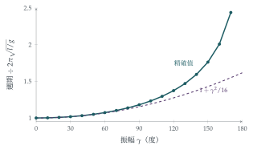

STEP III 1998，第 11 題
繼續之前，請先閱讀題目（原題為英文）。題目載於 STEP Support Programme 的題目資料庫： step.maths.org/questions/98-s3-q11
引子
每個修讀物理的學生都學過：單擺（pendulum）的週期（period）是 \(2\pi\sqrt{l/g}\)，與擺動的幅度無關。伽利略（Galileo）對此深信不疑，相傳他曾在比薩大教堂以自己的脈搏為一盞搖晃的吊燈計時；擺鐘之所以能夠報時，靠的也正是這一點。然而這並不完全正確。這條公式源自近似式 \(\sin\theta \approx \theta\)，而擺動弧度大的單擺，所需的時間會較長。在 \(90^\circ\) 時，週期長了 \(18\%\)；若單擺從幾乎倒立的位置釋放，所需的時間則要多長有多長。
本題先把精確的週期寫成一個積分，再求出中等擺幅下的第一個修正項。這個積分無法用初等函數求出：它是一個橢圓積分（elliptic integral），而人們如何馴服這類積分的故事，由高斯（Gauss）的算術幾何平均一直延伸到橢圓曲線的理論。
動筆之前
擺錘沿半徑為 \(l\) 的圓周運動。以 \(\theta\) 和 \(\dot\theta\) 表示，它的速率和高度（相對於最低點）分別是甚麼？
速率是 \(l\dot\theta\)，而距最低點的高度是 \(l(1 - \cos\theta)\)。由於繩子不作功（其張力恆與運動方向垂直），能量守恆（conservation of energy）。
逐步解題
階段 1 能量
在最大擺角 \(\gamma\) 處，擺錘瞬時靜止。由能量守恆得 \[\tfrac12ml^2\dot\theta^2 + mgl(1 - \cos\theta) = mgl(1 - \cos\gamma),\] 兩邊除以 \(ml\)，得 \(\frac12l\dot\theta^2 = g(\cos\theta - \cos\gamma)\)。■
階段 2 把週期寫成積分
怎樣用半角表示 \(\cos\theta - \cos\gamma\)？另外，由 \(\theta = 0\) 擺到 \(\theta = \gamma\) 佔了週期的多少？
利用 \(\cos\theta = 1 - 2\sin^2\frac\theta2\)，可得 \(\cos\theta - \cos\gamma = 2\bigl(\sin^2\frac\gamma2 - \sin^2\frac\theta2\bigr)\)，所以 \[\dot\theta = 2\sqrt{\frac gl}\,\Bigl(\sin^2\frac\gamma2 - \sin^2\frac\theta2\Bigr)^{1/2}.\] 根據對稱性，由 \(0\) 擺到 \(\gamma\) 需時四分之一個週期，所以 \[P = 4\int_0^\gamma\frac{\mathrm{d}\theta}{\dot\theta} = 2\sqrt{\frac lg}\int_0^\gamma\Bigl(\sin^2\frac\gamma2 - \sin^2\frac\theta2\Bigr)^{-1/2}\mathrm{d}\theta. \qed\]
階段 3 消除奇點
被積函數（integrand）在 \(\theta = \gamma\) 處變成無窮大。設 \(k = \sin\frac\gamma2\)，並作代換（substitution）\(\sin\frac\theta2 = k\sin\phi\)。\(0 \leq \theta \leq \gamma\) 對應於 \(\phi\) 的甚麼範圍？被積函數會變成怎樣？
當 \(\theta\) 由 \(0\) 變到 \(\gamma\) 時，\(\phi\) 由 \(0\) 變到 \(\frac\pi2\)。求導得 \(\frac12\cos\frac\theta2\,\mathrm{d}\theta = k\cos\phi\,\mathrm{d}\phi\)，所以 \[\mathrm{d}\theta = \frac{2k\cos\phi\,\mathrm{d}\phi}{\cos\frac\theta2} = \frac{2k\cos\phi\,\mathrm{d}\phi}{\sqrt{1 - k^2\sin^2\phi}}.\] 另一方面，\(\sin^2\frac\gamma2 - \sin^2\frac\theta2 = k^2(1 - \sin^2\phi) = k^2\cos^2\phi\)。那些棘手的因子互相抵銷： \[P = 2\sqrt{\frac lg}\int_0^{\pi/2}\frac{1}{k\cos\phi}\cdot\frac{2k\cos\phi}{\sqrt{1 - k^2\sin^2\phi}}\,\mathrm{d}\phi = 4\sqrt{\frac lg}\int_0^{\pi/2}\frac{\mathrm{d}\phi}{\sqrt{1 - k^2\sin^2\phi}}.\] 由於 \(k < 1\)，新的被積函數性質十分良好。
階段 4 第一個修正項
當 \(k\) 很小時，用二項式定理（binomial theorem）展開 \((1 - k^2\sin^2\phi)^{-1/2}\)。\(\int_0^{\pi/2}\sin^2\phi\,\mathrm{d}\phi\) 等於甚麼？
準確至一階，\((1 - k^2\sin^2\phi)^{-1/2} \approx 1 + \frac12k^2\sin^2\phi\)，而 \(\int_0^{\pi/2}\sin^2\phi\,\mathrm{d}\phi = \frac\pi4\)。所以 \[P \approx 4\sqrt{\frac lg}\Bigl(\frac\pi2 + \frac{k^2}{2}\cdot\frac\pi4\Bigr) = 2\pi\sqrt{\frac lg}\Bigl(1 + \frac{k^2}{4}\Bigr).\] 當 \(\gamma\) 很小時，\(k = \sin\frac\gamma2 \approx \frac\gamma2\)，故 \(k^2 \approx \frac{\gamma^2}{4}\)，於是 \[P \approx 2\pi\sqrt{\frac lg}\Bigl(1 + \frac{\gamma^2}{16}\Bigr). \qed\] 擺幅為 \(20^\circ\)（\(\gamma \approx 0.35\)）時，修正量不足 \(1\%\)；在 \(60^\circ\) 時則約為 \(7\%\)（圖 11.3.1）。

回顧
能量給出首次積分（first integral）。二階方程變成了一階方程，而週期則變成了一個積分。
代換馴服奇點（singularity）。被積函數在轉向點處趨向無窮大；代換 \(\sin\frac\theta2 = k\sin\phi\) 消除了這個問題。
先求精確，再作近似。我們先求出精確的公式，然後將它展開，這樣同時可以知道近似的效果有多好。
背後的數學
橢圓積分
積分 \[K(k) = \int_0^{\pi/2}\frac{\mathrm{d}\phi}{\sqrt{1 - k^2\sin^2\phi}}\] 稱為第一類完全橢圓積分（complete elliptic integral of the first kind），這個名稱的由來，是因為與它相近的另一個積分給出橢圓的周界。精確的週期是 \(P = 4\sqrt{l/g}\,K\bigl(\sin\frac\gamma2\bigr)\)。把被積函數完全展開，再利用 第 4.4 節 中的沃利斯積分（Wallis integrals）\(\int_0^{\pi/2}\sin^{2n}\phi\,\mathrm{d}\phi\) 逐項積分，便得 \[P = 2\pi\sqrt{\frac lg}\Bigl(1 + \bigl(\tfrac12\bigr)^2k^2 + \bigl(\tfrac{1\cdot3}{2\cdot4}\bigr)^2k^4 + \bigl(\tfrac{1\cdot3\cdot5}{2\cdot4\cdot6}\bigr)^2k^6 + \cdots\Bigr).\] \(K(k)\) 無法以有限個熟悉的函數組合而成；它是一個名副其實的新函數。
高斯的非凡公式
計算 \(K\) 有一個好得多的方法。你在 第 2.6 節 已見過算術幾何平均（arithmetic–geometric mean）：由 \(a\) 和 \(b\) 開始，反覆以它們的算術平均和幾何平均取代它們。高斯在 1799 年發現 \[K(k) = \frac{\pi}{2\,\mathrm{AGM}\bigl(1, \sqrt{1 - k^2}\bigr)},\] 所以振幅為 \(\gamma\) 的單擺，其週期恰好是 \[P = \frac{2\pi\sqrt{l/g}}{\mathrm{AGM}\bigl(1, \cos\frac\gamma2\bigr)}.\] AGM 收斂得極快：擺幅在大約 \(160^\circ\) 以內時，只需三四步便可求得準確至十位有效數字的週期，圖 11.3.1 中的數值正是這樣算出來的。接近 \(180^\circ\) 時，兩個初始值 \(1\) 和 \(\cos\frac\gamma2\) 相距甚遠，需要多走一兩步，但即使在 \(179^\circ\)，五步也已足夠。高斯在日記中寫道，這項發現「開闢了一個全新的分析領域」，而他說得一點不錯：把橢圓積分反演，引領阿貝爾（Abel）和雅可比（Jacobi）發現了橢圓函數（elliptic functions），而橢圓函數又引出了橢圓曲線（elliptic curves）。橢圓曲線如今是數論的核心（它們正是證明費馬最後定理（Fermat’s Last Theorem）的關鍵），也是保障互聯網安全的密碼學的核心。
伽利略大約在 1602 年提出，單擺的週期與振幅無關；對於他所研究的小幅擺動，這是個很好的近似。惠更斯（Christiaan Huygens）意識到這並不精確，並在 1659 年找到了一條曲線，沿着它擺動時週期確實與振幅無關：那就是擺線（cycloid），即 第 11.4 節 的主題。他由 1656 年起製造的擺鐘，把計時的誤差由每天約一刻鐘減至約十五秒。航海天文鐘（marine chronometer）解決了在海上測定經度的難題，它後來完全捨棄了單擺，但直至 1920 年代，擺鐘仍然是世上最準確的計時器。
思維技巧
當一個量由無法求值的積分給出時，先把它變換成性質良好的形式，然後展開被積函數並逐項積分。
物理學家正是這樣為理想化的結果求出修正項的，這也是微擾理論（perturbation theory）的起點。到了大學，你會學到逐項積分在甚麼情況下才成立（一致收斂（uniform convergence）），以及怎樣估計截斷級數所造成的誤差。
延伸練習
繫着的質點。試做 STEP III 2015，第 9 題：這個振子即使在小幅振動時，週期也取決於振幅。為甚麼它會這樣，而單擺卻不會？
下一項。把二項式展開多取一項，證明 \(P \approx 2\pi\sqrt{\frac lg}\bigl(1 + \frac{\gamma^2}{16} + \frac{11\gamma^4}{3072}\bigr)\)。
徒手計算 AGM。用三步 AGM 估算振幅為 \(90^\circ\) 的單擺的週期，並與圖中的數值 \(1.1803\) 比較。
時鐘。一座擺鐘經調校後，在振幅為 \(4^\circ\) 時走時完全準確。若它的振幅增至 \(5^\circ\)，它每天會慢多少秒？
延伸閱讀
David Morin, Introduction to Classical Mechanics（Cambridge University Press），第 4 章，當中討論了大振幅的單擺。
Jonathan Borwein & Peter Borwein, Pi and the AGM（Wiley）。高斯的發現及其應用，包括計算 \(\pi\) 的最快方法。
Dava Sobel, Longitude（Fourth Estate）。海上計時的故事，講述單擺以外的發展。